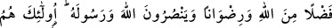
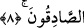

8. (Allah’ın verdiği bu ganîmet malları,) yurtlarından ve mallarından
uzaklaştırılmış olan, Allah’tan bir lütuf ve rızâ dileyen, Allah’ın dinine ve
Peygamberine yardım eden fakir muhâcirlerindir. İşte doğru olanlar bunlardır.
“(Allah’ın verdiği bu ganîmet malları) yurtlarından ve mallarından uzaklaştırılmış
olan, Allah’tan bir lütuf ve rızâ dileyen, Allah’ın dinine ve peygamberine yardım eden
fakir muhâcirlerindir.” “Fakir muhâcirler” cümlesi, önceki âyette geçen “akraba ve
ona atfedilenler”den bedeldir. “Allah ve Rasûlü” kelimelerinden bedel değildir. Aksi
halde Peygamberin de fakirlerden sayılması gerekirdi ki, eksiklik ve yermeyi
çağrıştıracağı için Peygamber (a.s.)’a fakir denmez. Çünkü, fakr kelimesinin asıl
mânâsı, “sırt omurgasının kemiğini kırmak” demektir. Bu sebeple büyük ihtiyaç ve
belâya, ağır sıkıntıya fâkıra adı verilmiştir. Zira bu ihtiyaç ve belâ insanı yenik düşürüp
belkemiğini kırar. Allah Rasûlü’nü fakirlikle isimlendirmek uygun olmayınca, Allah
Teâlâ için böyle bir şeyin söz konusu bile edilmemesi gerekir. Nitekim Allah Teâlâ,
Rasülü’nü “Allah’ın dinine ve Peygamberine yardım ederler” cümlesiyle fakirlerden
ayırmıştır. Geriye, vatanında malı bulunan yolcuya da fakir denilemeyeceği kalıyor ki,
Telvih ve diğer bazı eserlerde bu böyle kaydedilmiştir. İmam Şâfiî gibi akrabadan
zengin olanlara da feyden pay verenlere göre bu cümle, yetimler ve ondan sonraki ona
atfedilen kelimelerden bedeldir. İmam Ebû Hanife gibi akrabadan yalnız fakir olanlara
feyden pay verenlere göre ise “yakınları” ve ona atfedilmiş olanlardan bedeldir. Çünkü
Ebû Hanife’ye göre feyden pay verilmesi için o yakınların yoksul olmaları şarttır.
“Rasûlullah’ın yakınlarına feyden pay vermek için fakir olmaları şartı Nadiroğullarının
feyine mahsustur” demek açık bir yanlıştır. İrşad adlı kitapta da böyle belirtilir.
Mekke müşrikleri, müslümanları yurtlarından çıkmaya mecbur bıraktılar, mallarını da
aldılar. Yüz kişi olan bu müslümanlar bu sebeple Mekke’den çıktılar. Aslında
müslümanlar, Allah’ı ve Rasûlü’nü sevdikleri için çıkmışlardır. Bütün bu zorluklara
rağmen İslam dînini tercih etmişlerdir. Öyle ki, onlardan bazı kimseler açlıktan dolayı
belini doğrultabilmek için karnına taş bağlardı. Kimi de sığınacak evi ve yeri
bulunmadığı için soğuktan korunmak amacıyla kışın çukur kazar ve oraya sığınırdı.
Sahih olan rivâyete göre Rasûl-i Ekrem (s.a.), muhâcirlerin yoksullarıyla güne başlar ve
onlara şöyle hitâb ederdi: “Ey muhâcir yoksullar! Size müjdeler olsun, kıyamet günü
size tam nur verilecek. Siz zenginlerden yarım gün önce cennete gireceksiniz. Bu da
beşyüz yıl eder.”[39]
“Muhâcirler, dünyada Allah’tan bir rızık, âhirette de rızâ diledikleri halde...”
Önce, yurtlarından çıkarılmış olmaları sebebiyle fey’e hak kazanmış olmakla
vasıflandılar. Sonra da aynı nedenle kıymet ve itibarlarının büyük olduğu tekrar
edilerek pekiştirilmektedir. Bu cümle, “uhricû/çıkarıldılar” fiilinin fâili durumundaki